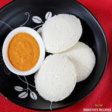

Idli - Recipe

Idli is a soft and spongy steamed rice cake, a staple South Indian breakfast served with chutney and sambar.
Ingredients
- 3 cups rice (preferably idli rice or parboiled rice)
- 1 cup urad dal (skinned black gram)
- 1 teaspoon fenugreek seeds
- Water (for soaking and grinding)
- Salt (to taste)
Steps
- Soaking: Rinse the rice and urad dal separately. Soak the rice and fenugreek seeds in water for 6 hours. Soak the urad dal separately for 4 hours.
- Grinding: Grind the urad dal into a smooth and fluffy batter using minimal water. Grind the rice into a slightly coarse paste.
- Mixing: Combine both batters in a large bowl, add salt, and mix thoroughly.
- Fermenting: Leave the batter in a warm place for 8-12 hours or overnight to ferment until it doubles in volume.
- Dilute the batter slightly with water to achieve a pourable consistency.
- Steam the idlis: Grease idli molds, pour batter, and steam for 10-15 minutes.
- Serve: Enjoy hot with coconut chutney and sambar.
Home